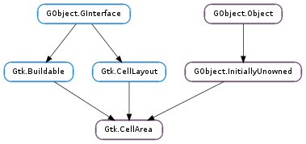

| Subclasses: | Gtk.CellAreaBox |
|---|
| activate(context, widget, cell_area, flags, edit_only) | |
| activate_cell(widget, renderer, event, cell_area, flags) | |
| add(renderer) | |
| add_focus_sibling(renderer, sibling) | |
| apply_attributes(tree_model, iter, is_expander, is_expanded) | |
| attribute_connect(renderer, attribute, column) | |
| attribute_disconnect(renderer, attribute) | |
| cell_get_property(renderer, property_name, value) | |
| cell_set_property(renderer, property_name, value) | |
| copy_context(context) | |
| create_context() | |
| event(context, widget, event, cell_area, flags) | |
| focus(direction) | |
| foreach(callback, *callback_data) | |
| foreach_alloc(context, widget, cell_area, background_area, callback, *callback_data) | |
| get_cell_allocation(context, widget, renderer, cell_area) | |
| get_cell_at_position(context, widget, cell_area, x, y) | |
| get_current_path_string() | |
| get_edit_widget() | |
| get_edited_cell() | |
| get_focus_cell() | |
| get_focus_from_sibling(renderer) | |
| get_focus_siblings(renderer) | |
| get_preferred_height(context, widget) | |
| get_preferred_height_for_width(context, widget, width) | |
| get_preferred_width(context, widget) | |
| get_preferred_width_for_height(context, widget, height) | |
| get_request_mode() | |
| has_renderer(renderer) | |
| inner_cell_area(widget, cell_area) | |
| is_activatable() | |
| is_focus_sibling(renderer, sibling) | |
| remove(renderer) | |
| remove_focus_sibling(renderer, sibling) | |
| render(context, widget, cr, background_area, cell_area, flags, paint_focus) | |
| request_renderer(renderer, orientation, widget, for_size) | |
| set_focus_cell(renderer) | |
| stop_editing(canceled) |
| Name | Type | Flags | Description |
|---|---|---|---|
| edit-widget | Gtk.CellEditable | r | The widget currently editing the edited cell |
| edited-cell | Gtk.CellRenderer | r | The cell which is currently being edited |
| focus-cell | Gtk.CellRenderer | r/w | The cell which currently has focus |
| Name | Parameters | Return | Description |
|---|---|---|---|
| add-editable | Gtk.CellRenderer, Gtk.CellEditable, cairo.RectangleInt, str | Indicates that editing has started on renderer and that editable should be added to the owning cell-layouting widget at cell_area. | |
| apply-attributes | Gtk.TreeModel, Gtk.TreeIter, bool, bool | This signal is emitted whenever applying attributes to area from model | |
| focus-changed | Gtk.CellRenderer, str | Indicates that focus changed on this area. This signal is emitted either as a result of focus handling or event handling. It’s possible that the signal is emitted even if the currently focused renderer did not change, this is because focus may change to the same renderer in the same cell area for a different row of data. | |
| remove-editable | Gtk.CellRenderer, Gtk.CellEditable | Indicates that editing finished on renderer and that editable should be removed from the owning cell-layouting widget. |
| Name | Type | Access |
|---|---|---|
| parent_instance | GObject.InitiallyUnowned | r |
Bases: GObject.InitiallyUnowned, Gtk.Buildable, Gtk.CellLayout
The Gtk.CellArea is an abstract class for Gtk.CellLayout widgets (also referred to as “layouting widgets”) to interface with an arbitrary number of Gtk.CellRenderers and interact with the user for a given Gtk.TreeModel row.
The cell area handles events, focus navigation, drawing and size requests and allocations for a given row of data.
Usually users dont have to interact with the Gtk.CellArea directly unless they are implementing a cell-layouting widget themselves.
Requesting area sizes
As outlined in Gtk.Widget ‘s geometry management section, GTK+ uses a height-for-width geometry management system to compute the sizes of widgets and user interfaces. Gtk.CellArea uses the same semantics to calculate the size of an area for an arbitrary number of Gtk.TreeModel rows.
When requesting the size of a cell area one needs to calculate the size for a handful of rows, and this will be done differently by different layouting widgets. For instance a Gtk.TreeViewColumn always lines up the areas from top to bottom while a Gtk.IconView on the other hand might enforce that all areas received the same width and wrap the areas around, requesting height for more cell areas when allocated less width.
It’s also important for areas to maintain some cell alignments with areas rendered for adjacent rows (cells can appear “columnized” inside an area even when the size of cells are different in each row). For this reason the Gtk.CellArea uses a Gtk.CellAreaContext object to store the alignments and sizes along the way (as well as the overall largest minimum and natural size for all the rows which have been calculated with the said context).
The Gtk.CellAreaContext is an opaque object specific to the Gtk.CellArea which created it (see Gtk.CellArea.create_context ()). The owning cell-layouting widget can create as many contexts as it wishes to calculate sizes of rows which should receive the same size in at least one orientation (horizontally or vertically), However, it’s important that the same Gtk.CellAreaContext which was used to request the sizes for a given Gtk.TreeModel row be used when rendering or processing events for that row.
In order to request the width of all the rows at the root level of a Gtk.TreeModel one would do the following:
Requesting the width of a handful of Gtk.TreeModel rows
GtkTreeIter iter;
gint minimum_width;
gint natural_width;
valid = gtk_tree_model_get_iter_first (model, &iter);
while (valid)
{
gtk_cell_area_apply_attributes (area, model, &iter, FALSE, FALSE);
gtk_cell_area_get_preferred_width (area, context, widget, NULL, NULL);
valid = gtk_tree_model_iter_next (model, &iter);
}
gtk_cell_area_context_get_preferred_width (context, &minimum_width, &natural_width);
Note that in this example it’s not important to observe the returned minimum and natural width of the area for each row unless the cell-layouting object is actually interested in the widths of individual rows. The overall width is however stored in the accompanying Gtk.CellAreaContext object and can be consulted at any time.
This can be useful since Gtk.CellLayout widgets usually have to support requesting and rendering rows in treemodels with an exceedingly large amount of rows. The Gtk.CellLayout widget in that case would calculate the required width of the rows in an idle or timeout source (see GLib.timeout_add ()) and when the widget is requested its actual width in Gtk.WidgetClass.get_preferred_width() it can simply consult the width accumulated so far in the Gtk.CellAreaContext object.
A simple example where rows are rendered from top to bottom and take up the full width of the layouting widget would look like:
A typical get_preferred_width() implementation
static void
foo_get_preferred_width (GtkWidget *widget,
gint *minimum_size,
gint *natural_size)
{
Foo *foo = FOO (widget);
FooPrivate *priv = foo->priv;
foo_ensure_at_least_one_handfull_of_rows_have_been_requested (foo);
gtk_cell_area_context_get_preferred_width (priv->context, minimum_size, natural_size);
}
In the above example the Foo widget has to make sure that some row sizes have been calculated (the amount of rows that Foo judged was appropriate to request space for in a single timeout iteration) before simply returning the amount of space required by the area via the Gtk.CellAreaContext.
Requesting the height for width (or width for height) of an area is a similar task except in this case the Gtk.CellAreaContext does not store the data (actually, it does not know how much space the layouting widget plans to allocate it for every row. It’s up to the layouting widget to render each row of data with the appropriate height and width which was requested by the Gtk.CellArea ).
In order to request the height for width of all the rows at the root level of a Gtk.TreeModel one would do the following:
Requesting the height for width of a handful of Gtk.TreeModel rows
GtkTreeIter iter;
gint minimum_height;
gint natural_height;
gint full_minimum_height = 0;
gint full_natural_height = 0;
valid = gtk_tree_model_get_iter_first (model, &iter);
while (valid)
{
gtk_cell_area_apply_attributes (area, model, &iter, FALSE, FALSE);
gtk_cell_area_get_preferred_height_for_width (area, context, widget,
width, &minimum_height, &natural_height);
if (width_is_for_allocation)
cache_row_height (&iter, minimum_height, natural_height);
full_minimum_height += minimum_height;
full_natural_height += natural_height;
valid = gtk_tree_model_iter_next (model, &iter);
}
Note that in the above example we would need to cache the heights returned for each row so that we would know what sizes to render the areas for each row. However we would only want to really cache the heights if the request is intended for the layouting widgets real allocation.
In some cases the layouting widget is requested the height for an arbitrary for_width, this is a special case for layouting widgets who need to request size for tens of thousands of rows. For this case it’s only important that the layouting widget calculate one reasonably sized chunk of rows and return that height synchronously. The reasoning here is that any layouting widget is at least capable of synchronously calculating enough height to fill the screen height (or scrolled window height) in response to a single call to Gtk.WidgetClass.get_preferred_height_for_width(). Returning a perfect height for width that is larger than the screen area is inconsequential since after the layouting receives an allocation from a scrolled window it simply continues to drive the scrollbar values while more and more height is required for the row heights that are calculated in the background.
Rendering Areas
Once area sizes have been aquired at least for the rows in the visible area of the layouting widget they can be rendered at Gtk.WidgetClass.draw() time.
A crude example of how to render all the rows at the root level runs as follows:
Requesting the width of a handful of Gtk.TreeModel rows
GtkAllocation allocation;
GdkRectangle cell_area = { 0, };
GtkTreeIter iter;
gint minimum_width;
gint natural_width;
gtk_widget_get_allocation (widget, &allocation);
cell_area.width = allocation.width;
valid = gtk_tree_model_get_iter_first (model, &iter);
while (valid)
{
cell_area.height = get_cached_height_for_row (&iter);
gtk_cell_area_apply_attributes (area, model, &iter, FALSE, FALSE);
gtk_cell_area_render (area, context, widget, cr,
&cell_area, &cell_area, state_flags, FALSE);
cell_area.y += cell_area.height;
valid = gtk_tree_model_iter_next (model, &iter);
}
Note that the cached height in this example really depends on how the layouting widget works. The layouting widget might decide to give every row its minimum or natural height or, if the model content is expected to fit inside the layouting widget without scrolling, it would make sense to calculate the allocation for each row at Gtk.Widget ::size-allocate time using Gtk.distribute_natural_allocation ().
Handling Events and Driving Keyboard Focus
Passing events to the area is as simple as handling events on any normal widget and then passing them to the Gtk.CellArea.event () API as they come in. Usually Gtk.CellArea is only interested in button events, however some customized derived areas can be implemented who are interested in handling other events. Handling an event can trigger the Gtk.CellArea ::focus-changed signal to fire; as well as Gtk.CellArea ::add-editable in the case that an editable cell was clicked and needs to start editing. You can call Gtk.CellArea.stop_editing () at any time to cancel any cell editing that is currently in progress.
The Gtk.CellArea drives keyboard focus from cell to cell in a way similar to Gtk.Widget. For layouting widgets that support giving focus to cells it’s important to remember to pass Gtk.CellRendererState.FOCUSED to the area functions for the row that has focus and to tell the area to paint the focus at render time.
Layouting widgets that accept focus on cells should implement the Gtk.WidgetClass.focus() virtual method. The layouting widget is always responsible for knowing where Gtk.TreeModel rows are rendered inside the widget, so at Gtk.WidgetClass.focus() time the layouting widget should use the Gtk.CellArea methods to navigate focus inside the area and then observe the Gtk.DirectionType to pass the focus to adjacent rows and areas.
A basic example of how the Gtk.WidgetClass.focus() virtual method should be implemented:
Implementing keyboard focus navigation
static gboolean
foo_focus (GtkWidget *widget,
GtkDirectionType direction)
{
Foo *foo = FOO (widget);
FooPrivate *priv = foo->priv;
gint focus_row;
gboolean have_focus = FALSE;
focus_row = priv->focus_row;
if (!gtk_widget_has_focus (widget))
gtk_widget_grab_focus (widget);
valid = gtk_tree_model_iter_nth_child (priv->model, &iter, NULL, priv->focus_row);
while (valid)
{
gtk_cell_area_apply_attributes (priv->area, priv->model, &iter, FALSE, FALSE);
if (gtk_cell_area_focus (priv->area, direction))
{
priv->focus_row = focus_row;
have_focus = TRUE;
break;
}
else
{
if (direction == GTK_DIR_RIGHT ||
direction == GTK_DIR_LEFT)
break;
else if (direction == GTK_DIR_UP ||
direction == GTK_DIR_TAB_BACKWARD)
{
if (focus_row == 0)
break;
else
{
focus_row--;
valid = gtk_tree_model_iter_nth_child (priv->model, &iter, NULL, focus_row);
}
}
else
{
if (focus_row == last_row)
break;
else
{
focus_row++;
valid = gtk_tree_model_iter_next (priv->model, &iter);
}
}
}
}
return have_focus;
}
Note that the layouting widget is responsible for matching the Gtk.DirectionType values to the way it lays out its cells.
Cell Properties
The Gtk.CellArea introduces cell properties for Gtk.CellRenderers in very much the same way that Gtk.Container introduces child properties for Gtk.Widgets. This provides some general interfaces for defining the relationship cell areas have with their cells. For instance in a Gtk.CellAreaBox a cell might “expand” and receive extra space when the area is allocated more than its full natural request, or a cell might be configured to “align” with adjacent rows which were requested and rendered with the same Gtk.CellAreaContext.
Use Gtk.CellAreaClass.install_cell_property () to install cell properties for a cell area class and Gtk.CellAreaClass.find_cell_property () or Gtk.CellAreaClass.list_cell_properties () to get information about existing cell properties.
To set the value of a cell property, use Gtk.CellArea.cell_set_property (), Gtk.CellArea.cell_set () or Gtk.CellArea.cell_set_valist (). To obtain the value of a cell property, use Gtk.CellArea.cell_get_property (), Gtk.CellArea.cell_get () or Gtk.CellArea.cell_get_valist ().
| Parameters: |
|
|---|---|
| Returns: | Whether area was successfully activated. |
| Return type: |
Activates area, usually by activating the currently focused cell, however some subclasses which embed widgets in the area can also activate a widget if it currently has the focus.
| Parameters: |
|
|---|---|
| Returns: | whether cell activation was successful |
| Return type: |
This is used by Gtk.CellArea subclasses when handling events to activate cells, the base Gtk.CellArea class activates cells for keyboard events for free in its own Gtk.CellArea- >activate() implementation.
| Parameters: | renderer (Gtk.CellRenderer) – the Gtk.CellRenderer to add to area |
|---|
Adds renderer to area with the default child cell properties.
| Parameters: |
|
|---|
Adds sibling to renderer ‘s focusable area, focus will be drawn around renderer and all of its siblings if renderer can focus for a given row.
Events handled by focus siblings can also activate the given focusable renderer.
| Parameters: |
|
|---|
Applies any connected attributes to the renderers in area by pulling the values from tree_model.
| Parameters: |
|
|---|
Connects an attribute to apply values from column for the Gtk.TreeModel in use.
| Parameters: |
|
|---|
Disconnects attribute for the renderer in area so that attribute will no longer be updated with values from the model.
| Parameters: |
|
|---|
Gets the value of a cell property for renderer in area.
| Parameters: |
|
|---|
Sets a cell property for renderer in area.
| Parameters: | context (Gtk.CellAreaContext) – the Gtk.CellAreaContext to copy |
|---|---|
| Returns: | a newly created Gtk.CellAreaContext copy of context. |
| Return type: | Gtk.CellAreaContext |
This is sometimes needed for cases where rows need to share alignments in one orientation but may be separately grouped in the opposing orientation.
For instance, Gtk.IconView creates all icons (rows) to have the same width and the cells theirin to have the same horizontal alignments. However each row of icons may have a separate collective height. Gtk.IconView uses this to request the heights of each row based on a context which was already used to request all the row widths that are to be displayed.
| Returns: | a newly created Gtk.CellAreaContext which can be used with area. |
|---|---|
| Return type: | Gtk.CellAreaContext |
Creates a Gtk.CellAreaContext to be used with area for all purposes. Gtk.CellAreaContext stores geometry information for rows for which it was operated on, it is important to use the same context for the same row of data at all times (i.e. one should render and handle events with the same Gtk.CellAreaContext which was used to request the size of those rows of data).
| Parameters: |
|
|---|---|
| Returns: | True if the event was handled by area. |
| Return type: |
Delegates event handling to a Gtk.CellArea.
| Parameters: | direction (Gtk.DirectionType) – the Gtk.DirectionType |
|---|---|
| Returns: | True if focus remains inside area as a result of this call. |
| Return type: | bool |
This should be called by the area ‘s owning layout widget when focus is to be passed to area, or moved within area for a given direction and row data.
Implementing Gtk.CellArea classes should implement this method to receive and navigate focus in its own way particular to how it lays out cells.
| Parameters: |
|
|---|
Calls callback for every Gtk.CellRenderer in area.
| Parameters: |
|
|---|
Calls callback for every Gtk.CellRenderer in area with the allocated rectangle inside cell_area.
| Parameters: |
|
|---|---|
| Return type: | allocation: cairo.RectangleInt |
Derives the allocation of renderer inside area if area were to be renderered in cell_area.
| Parameters: |
|
|---|---|
| Returns: | the Gtk.CellRenderer at x and y. |
| Return type: | Gtk.CellRenderer, alloc_area: cairo.RectangleInt |
Gets the Gtk.CellRenderer at x and y coordinates inside area and optionally returns the full cell allocation for it inside cell_area.
| Returns: | The current Gtk.TreePath string for the current attributes applied to area. This string belongs to the area and should not be freed. |
|---|---|
| Return type: | str |
Gets the current Gtk.TreePath string for the currently applied Gtk.TreeIter, this is implicitly updated when Gtk.CellArea.apply_attributes () is called and can be used to interact with renderers from Gtk.CellArea subclasses.
| Returns: | The currently active Gtk.CellEditable widget |
|---|---|
| Return type: | Gtk.CellEditable |
Gets the Gtk.CellEditable widget currently used to edit the currently edited cell.
| Returns: | The currently edited Gtk.CellRenderer |
|---|---|
| Return type: | Gtk.CellRenderer |
Gets the Gtk.CellRenderer in area that is currently being edited.
| Returns: | the currently focused cell in area. |
|---|---|
| Return type: | Gtk.CellRenderer |
Retrieves the currently focused cell for area
| Parameters: | renderer (Gtk.CellRenderer) – the Gtk.CellRenderer |
|---|---|
| Returns: | the Gtk.CellRenderer for which renderer is a sibling, or None. |
| Return type: | Gtk.CellRenderer |
Gets the Gtk.CellRenderer which is expected to be focusable for which renderer is, or may be a sibling.
This is handy for Gtk.CellArea subclasses when handling events, after determining the renderer at the event location it can then chose to activate the focus cell for which the event cell may have been a sibling.
| Parameters: | renderer (Gtk.CellRenderer) – the Gtk.CellRenderer expected to have focus |
|---|---|
| Returns: | A GLib.List of Gtk.CellRenderers. The returned list is internal and should not be freed. |
| Return type: | [Gtk.CellRenderer] |
Gets the focus sibling cell renderers for renderer.
| Parameters: |
|
|---|---|
| Return type: |
Retrieves a cell area’s initial minimum and natural height.
area will store some geometrical information in context along the way; when requesting sizes over an arbitrary number of rows, it’s not important to check the minimum_height and natural_height of this call but rather to consult Gtk.CellAreaContext.get_preferred_height () after a series of requests.
| Parameters: |
|
|---|---|
| Return type: |
Retrieves a cell area’s minimum and natural height if it would be given the specified width.
area stores some geometrical information in context along the way while calling Gtk.CellArea.get_preferred_width (). It’s important to perform a series of Gtk.CellArea.get_preferred_width () requests with context first and then call Gtk.CellArea.get_preferred_height_for_width () on each cell area individually to get the height for width of each fully requested row.
If at some point, the width of a single row changes, it should be requested with Gtk.CellArea.get_preferred_width () again and then the full width of the requested rows checked again with Gtk.CellAreaContext.get_preferred_width ().
| Parameters: |
|
|---|---|
| Return type: |
Retrieves a cell area’s initial minimum and natural width.
area will store some geometrical information in context along the way; when requesting sizes over an arbitrary number of rows, it’s not important to check the minimum_width and natural_width of this call but rather to consult Gtk.CellAreaContext.get_preferred_width () after a series of requests.
| Parameters: |
|
|---|---|
| Return type: |
Retrieves a cell area’s minimum and natural width if it would be given the specified height.
area stores some geometrical information in context along the way while calling Gtk.CellArea.get_preferred_height (). It’s important to perform a series of Gtk.CellArea.get_preferred_height () requests with context first and then call Gtk.CellArea.get_preferred_width_for_height () on each cell area individually to get the height for width of each fully requested row.
If at some point, the height of a single row changes, it should be requested with Gtk.CellArea.get_preferred_height () again and then the full height of the requested rows checked again with Gtk.CellAreaContext.get_preferred_height ().
| Returns: | The Gtk.SizeRequestMode preferred by area. |
|---|---|
| Return type: | Gtk.SizeRequestMode |
Gets whether the area prefers a height-for-width layout or a width-for-height layout.
| Parameters: | renderer (Gtk.CellRenderer) – the Gtk.CellRenderer to check |
|---|---|
| Returns: | True if renderer is in the area. |
| Return type: | bool |
Checks if area contains renderer.
| Parameters: |
|
|---|---|
| Return type: | inner_area: cairo.RectangleInt |
This is a convenience function for Gtk.CellArea implementations to get the inner area where a given Gtk.CellRenderer will be rendered. It removes any padding previously added by Gtk.CellArea.request_renderer ().
| Returns: | whether area can do anything when activated. |
|---|---|
| Return type: | bool |
Returns whether the area can do anything when activated, after applying new attributes to area.
| Parameters: |
|
|---|---|
| Returns: | True if sibling is a focus sibling of renderer |
| Return type: |
Returns whether sibling is one of renderer ‘s focus siblings (see Gtk.CellArea.add_focus_sibling ()).
| Parameters: | renderer (Gtk.CellRenderer) – the Gtk.CellRenderer to remove from area |
|---|
Removes renderer from area.
| Parameters: |
|
|---|
Removes sibling from renderer ‘s focus sibling list (see Gtk.CellArea.add_focus_sibling ()).
| Parameters: |
|
|---|
Renders area ‘s cells according to area ‘s layout onto widget at the given coordinates.
| Parameters: |
|
|---|---|
| Return type: |
This is a convenience function for Gtk.CellArea implementations to request size for cell renderers. It’s important to use this function to request size and then use Gtk.CellArea.inner_cell_area () at render and event time since this function will add padding around the cell for focus painting.
| Parameters: | renderer (Gtk.CellRenderer) – the Gtk.CellRenderer to give focus to |
|---|
Explicitly sets the currently focused cell to renderer.
This is generally called by implementations of Gtk.CellAreaClass.focus() or Gtk.CellAreaClass.event(), however it can also be used to implement functions such as Gtk.TreeView.set_cursor_on_cell ().
| Parameters: | canceled (bool) – whether editing was canceled. |
|---|
Explicitly stops the editing of the currently edited cell.
If canceled is True, the currently edited cell renderer will emit the ::editing-canceled signal, otherwise the the ::editing-done signal will be emitted on the current edit widget.
See Gtk.CellArea.get_edited_cell () and Gtk.CellArea.get_edit_widget ().